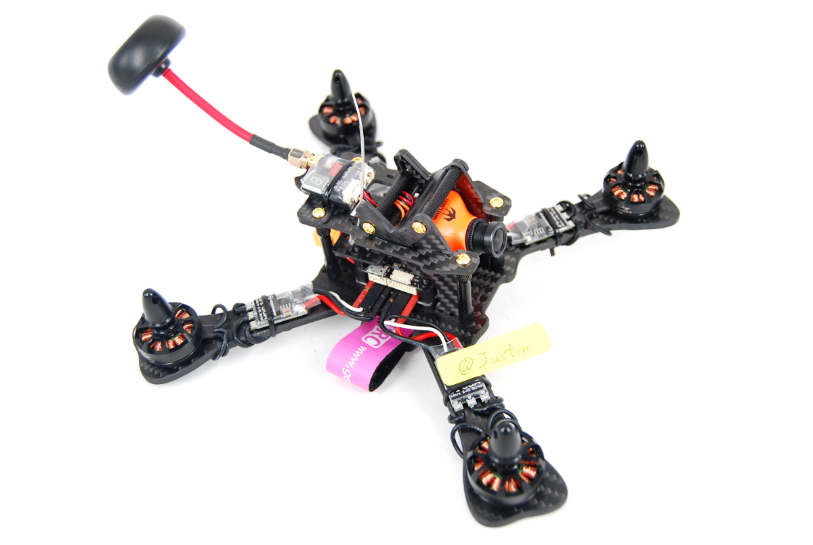

Weeks 1-4 — 01/20 - 02/14
Introduction to course and began project planning.
Introduction to course and began project planning.
During this week we finalized, submitted, and received approval for our project proposal. The proposal outlines the development of a vision-based autonomous UAV tracking system integrating machine learning perception with a ROS-based control architecture.
The approved proposal document can be accessed here:
Short demo of the MuJoCo look-down camera view with marker detection overlay:
This week upgraded the perception pipeline to use HSV based color segmentation for more reliable red marker detection. We also transitioned from just visualizing commands to actually applying them to the UAV inside the simulation.
We finalized the UAV platform we plan to use for a real-world demo if deployment is feasible.

Selected UAV platform for potential hardware deployment.
This week we moved the project from basic marker detection toward a more complete tracking loop. The goal was to make the simulation show a clear relationship between camera error and UAV motion.
Midterms / projects due, no progress made.
Spring break, no progress made.
Midterms / projects due, no progress made.
This week we spent time finding and selecting a paper for our class presentation. We looked through different options and chose one that relates to our project and the broader topic of autonomous tracking and control.
Selected paper: View selected paper (PDF)
This week we reorganized the simulation into a clearer baseline system that can later be adapted for hardware. The simulation now separates perception, controller logic, MuJoCo interfacing, shared messages, and logging.
Demo of the updated MuJoCo tracking simulation:
Most of this week was spent reading the paper and preparing the presentation, so progress on the project itself was limited. We still spent some time reviewing the controller structure and briefly tested a simple PID version of the image-based controller, but the results were not clearly better than the simpler proportional IBVS baseline. Because of that, we kept the proportional controller as the main controller for the rest of the simulation work.
In short, this week was more about regrouping after the presentation and deciding to keep the project centered on a working simulation rather than trying to force a more complicated controller without enough tuning time.
This week we started benchmarking the current IBVS simulation under different motion conditions. The main goal was to see how the same controller reacts when the platform moves slowly, quickly, or leaves the frame, instead of only testing one ideal circular path.
This is the standard tracking case used as the reference behavior for the later scenario tests.
External View
Onboard Drone Camera
We slowed the platform down to observe the controller in a less demanding case and use that as a reference for the faster tests.
External View
Onboard Drone Camera
We increased the platform speed to see when the same controller starts lagging behind the target more noticeably.
External View
Onboard Drone Camera
In this test the platform sweeps across the scene quickly, which lets us observe what happens when the target moves out of frame or is only visible for a short amount of time.
External View
Onboard Drone Camera
This week we extended the scenario testing to include clutter and target ambiguity. The goal was to see how a simple color-based IBVS system behaves when there are multiple red platforms in the scene instead of one clean target.
This test keeps the main platform motion similar to the baseline, but introduces extra red platforms nearby to see how much visual clutter affects the tracker.
External View
Onboard Drone Camera
In this case two platforms begin close together with the drone already on top, then separate so we can observe which target the detector and controller follow.
External View
Onboard Drone Camera
This is the most cluttered case so far, with several moving red platforms in the scene. It gives us a better sense of how fragile the current color-based target selection can be.
External View
Onboard Drone Camera
Around this week we also spent time trying to connect the simulation work back to the hardware direction of the project. This mostly meant reviewing the drone platform, flight stack, and what command interface would be needed if we wanted to move from simulation to a real system. We did not complete a hardware deployment, but we were able to keep the simulation code organized around a simple command output so that it could later be mapped to a real drone interface.
Finals week also limited how much deeper we could go, so the main result here was keeping the software work simulation-focused while still thinking through how it would translate to hardware later.
Final presentation.